El Tunco:
Known for the waves and a hotspot for surfers all over the world. This area also has some of the best sunsets in the country.
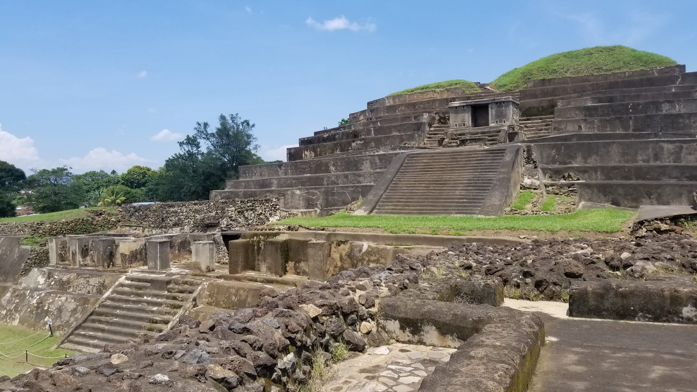
El Tazumal: Located in Chalcuapa, El Salvador. El Tazumal includes Mayan Ruins that date back to AD 100-1200.
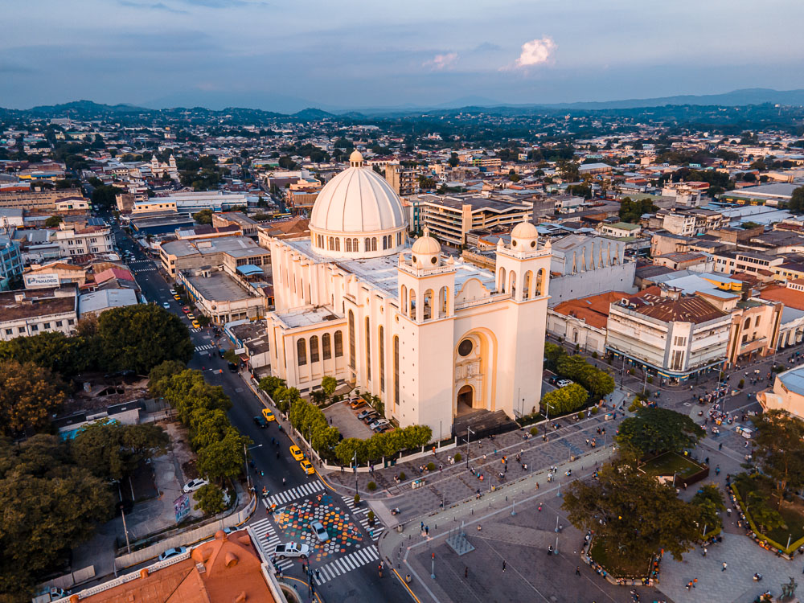
The National Cathedral: Located in the downtown area of San Salvador. It is a popular location for many tourists to visit for the history and their faith.
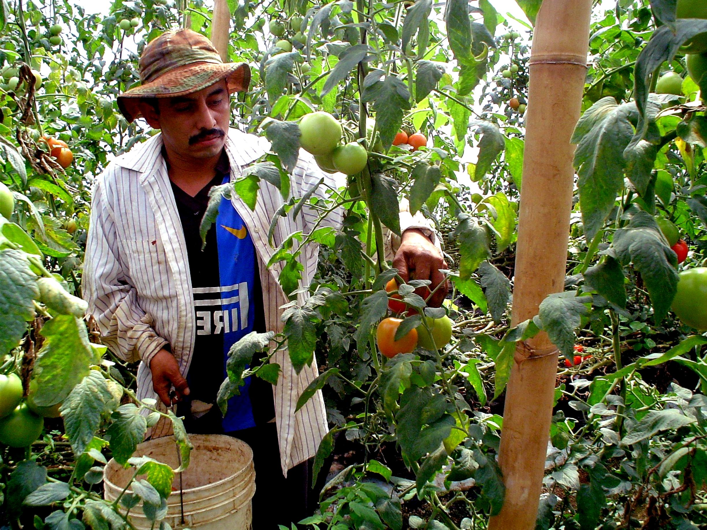
Coffee Picking:
The best way to take advantage of coffee picking is booking a Coffee Route in Santa Ana. On this tour you will learn about how
it is made and you will even get the opportunity to try many cups of coffee!
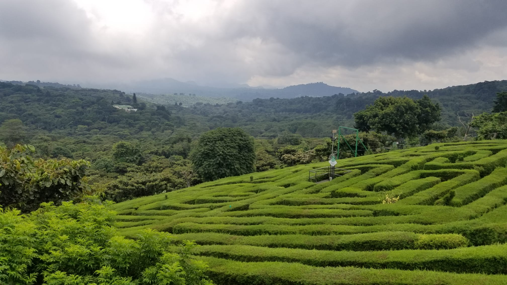
The Labyrinth:
Located in the mountains in Apanhecat, El Salvador. It is formed with over 2000 cypress trees. Tours are available Monday - Friday from 8:00 am - 6:00 PM.
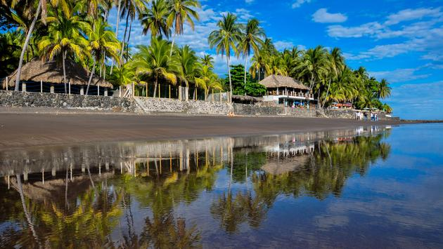
El Zonte Beach:
This is a great spot to catch waves from the Pacific Ocean. It may be in an underdeveloped area but it still has many tourist attractions in the area.
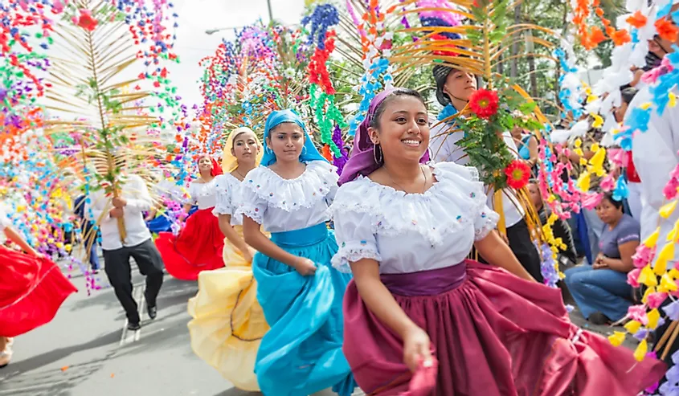
Flores y Palmas festival:
This festival takes place on the first Sunday of May in the town of Panchimalco, El Salvador. It is a celebration of the start of the rainy season.
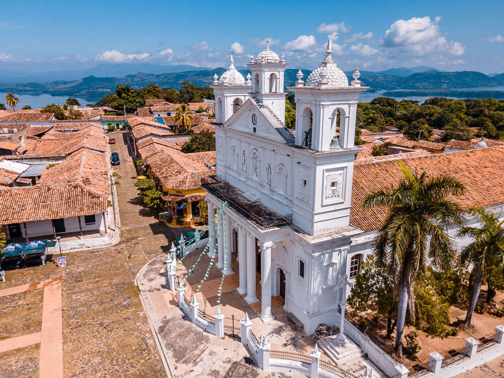
Suchitoto:
A place known as the "Cultural Capital of El Salvador" by the United Nations. If you enjoy art and culture, you don't want to skip this town!.
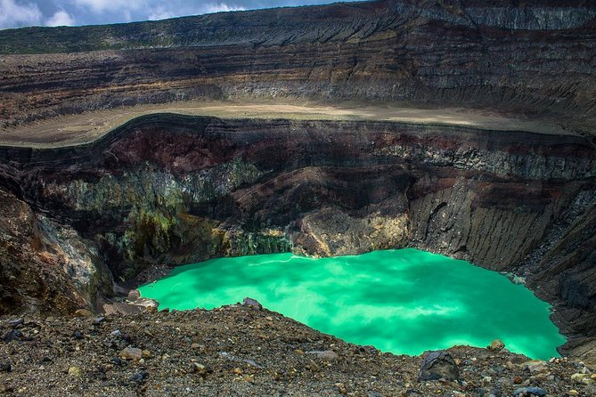
Santa Ana Volcano:
This Valcano sits at 2381 meres above sea level making it the highest Valcano in El Salvador! If you take the hike up, you will be able to spot a blue center known as crater lake.
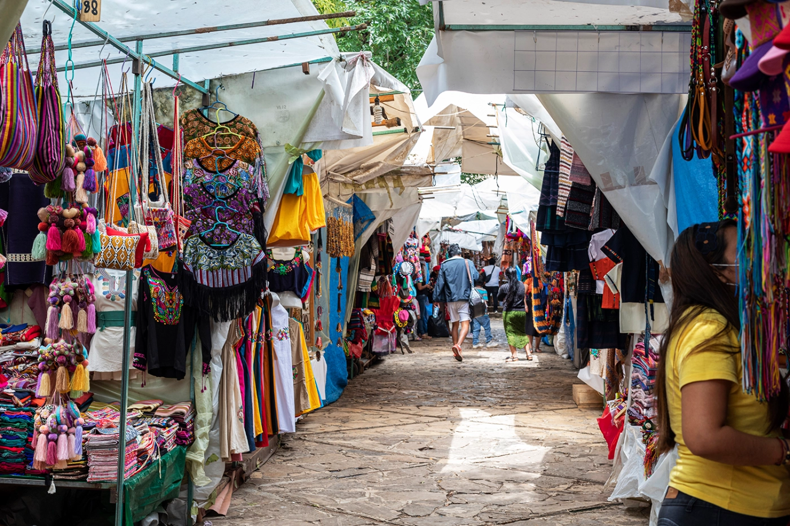
The Mercado:
El Salvador has many markets around the country. The Mercado Central located in the plaza of antimercado is the busiest with many hand crafted items to choose from!
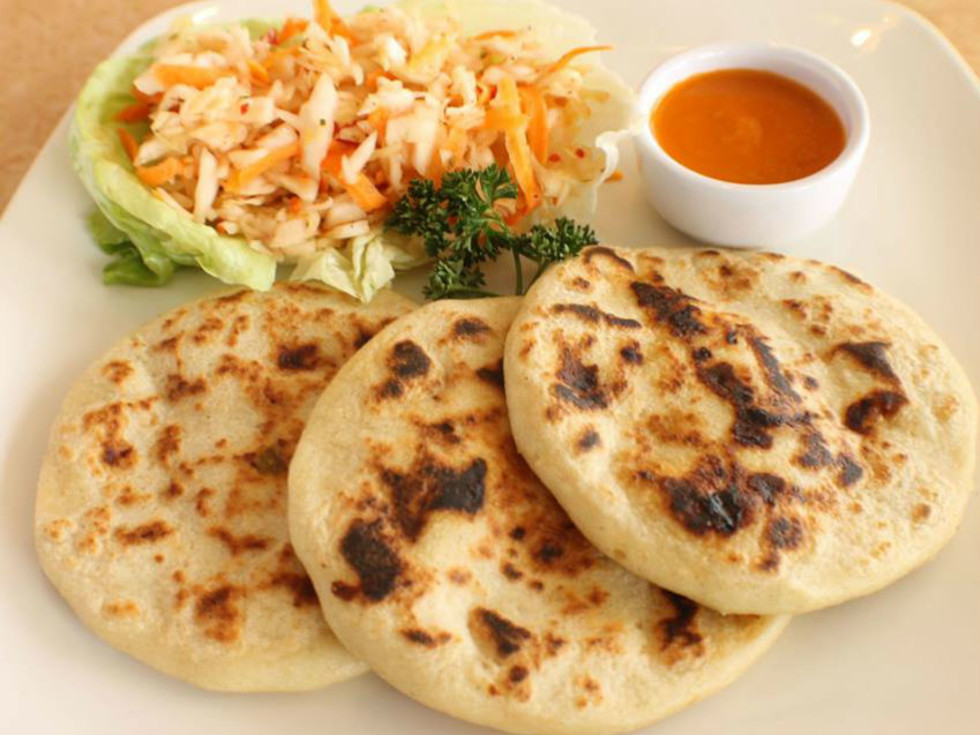
Pupusas:
The national dish of El Slavador that was believed to originate by the indigenious poeple called the Pipils. This dish became popular when the citizens fled
the country in the 1980's bringing the dish around the world.
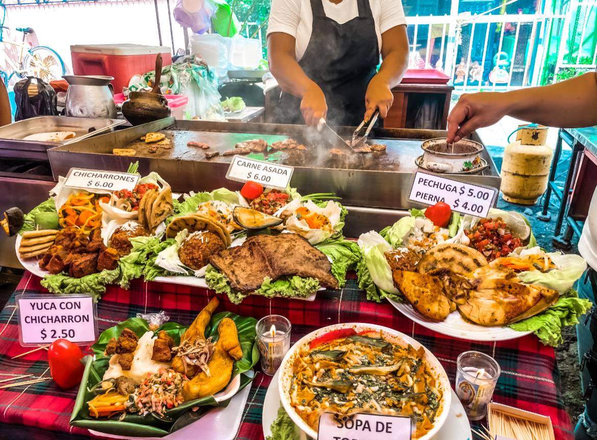
Street Food:
There are many street food options in El Salvador but it is not limited to the streets. If you hop on a bus, at almost every stop someone will jump on have an
option for fruit, dessert or candies!